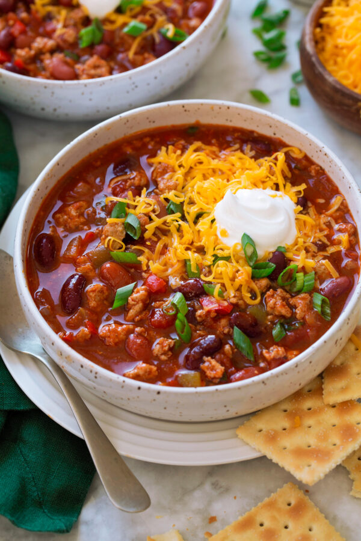

Back to Recipes
Carl's Famous Turkey Chilli

Description
So here it is, my very own world famous turkey chilli. This recipe is clean, lean and bursting with fantastic flavours and
spices. I have used this recipe for years after researching online for the perfect combination, and I'm confident that this is it.
You may be asking:"How can you be so sure that this is world famous?" Well my girlfriend loves it so thats enough for me.
Using only a select few ingredients, you too can create this fantastic turkey chilli in no time.
Ingredients
- 500g Turkey Mince (2% fat)
- 400g Chopped Tomatoes (1 can)
- 1 Red Onion (diced)
- 1 Red Bell Pepper (diced)
- 2 Garlic Cloves (diced)
- 400g Red Kidney Beans drained (1 can)
- 2 tbsp Tomato Paste
- 2 tbsp Olive Oil
- 2 tbsp Ground Cumin
- 2 tbsp Hot Smoked Paprika
- 1 tbsp Hot Chilli Powder
- 1 cup Chicken Stock
- 1 tsp Salt
- 1 tsp Pepper
- 1 tsp Worcester Sauce
- 1 tsp Lemon Juice
Garnish on top
- 50ml Sour Cream
- 30g Grated Cheddar Cheese
- Chopped Coriander
- Chopped Spring Onion
Served with 1 cup of cooked Basmati Rice (white or brown, whichever takes your fancy!)
Method
- Grab a nice big cooking pot and set your hob to a medium heat. Heat up your olive oil and throw in the
diced onions and garlic, cook until they are slighlty transparent (around 2 minutes).
Now add in your diced red pepper and cook for a further minute.
- Add in your Ground Cumin, Hot Smoked Paprika and mix into the pot. Leave for a minute for the spices to release their flavours.
- Now grab your turkey mince and put into the pot. With a wooden spoon (other utencils are available) stir the mince
into the spices and cook until brown.
- Throw in your can of chopped tomatoes, kidney beans, tomato paste and chicken stock and stir.
- Add your Worcester sauce & lemon juice and season well with the salt and pepper. Bring to the boil whilst stiring gently.
- Cover the pot and bring the heat down to a simmer. Leave for around 45 mins, stirring occasionally.
- Serve with a dollop of sour cream, handful of cheddar cheese, chopped sping onion and a sprinkle of coriander. Add in the basmati
rice on the side if desired.
